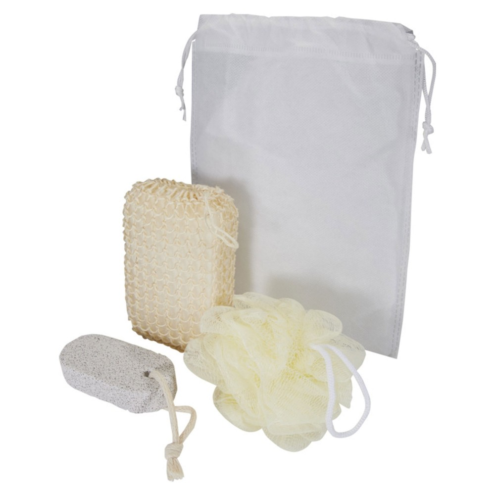

Em resumo
Ideias para congressos, conferências, feiras, festivais e eventos desportivos, pensadas ao longo do percurso de participação. As famílias apresentadas são possibilidades a avaliar, não artigos obrigatórios.
Contexto em imagens


Destinatários e necessidades
Participantes
Podem precisar de informação, materiais de sessão ou de uma forma de identificar o evento.
Oradores e expositores
Podem ter necessidades diferentes das do público geral e da organização.
Equipa organizadora e voluntários
Podem precisar de identificação e de materiais ligados às tarefas que desempenham.
Ocasiões, locais e épocas
Inscrição e receção
A ocasião destina-se a participantes, a oradores e a expositores e pode decorrer em contextos como balcão de inscrição, entrada ou ponto de acreditação. O momento — antes da abertura e durante a chegada, segundo o programa do evento — ajuda a enquadrar o objetivo de entregar informação e materiais adequados ao grupo identificado.
Sessões e conferências
A ocasião destina-se a participantes e a oradores e pode decorrer em contextos como salas, auditórios ou espaços de formação. O momento — durante as sessões previstas no programa — ajuda a enquadrar o objetivo de apoiar a atividade sem interferir com o conteúdo ou o equipamento de apresentação.
Feira ou exposição
A ocasião destina-se a expositores e a público e pode decorrer em contextos como bancadas, pavilhões e zonas de circulação. O momento — horário e datas definidos para cada edição — ajuda a enquadrar o objetivo de facilitar a participação ou a recolha de informação, ponderando o transporte.
Festival, atividade ao ar livre ou evento desportivo
A ocasião destina-se a participantes, a voluntários e a público e pode decorrer em contextos como recinto, percurso e pontos de apoio. O momento — condições e datas variam por evento e edição — ajuda a enquadrar o objetivo de planear onde ocorre a entrega e a quem se destina cada material.
Saída e encerramento
A ocasião destina-se a participantes e à organização e pode decorrer em contextos como saída, balcão de informação ou ponto de recolha. O momento — no fim do programa, se essa etapa estiver prevista — ajuda a enquadrar o objetivo de evitar concentrar entregas num ponto que dificulte a circulação.
Famílias de artigos a avaliar
Participantes
Objetivo
Inscrição e acompanhamento
Famílias a avaliar
Sacos para documentação, Material de
escrita, Artigos de identificação
Oradores e expositores
Objetivo
Apoio à participação
Famílias a avaliar
Cadernos, Material de escrita, Artigos de
identificação
Organização e voluntários
Objetivo
Identificação e coordenação
Famílias a avaliar
Têxteis identificativos, Sacos para
materiais da equipa, Artigos de identificação
Público
Objetivo
Participação e recordação
Famílias a avaliar
Artigos para eventos, Sacos, Artigos de
hidratação
Utilização e distribuição
- Desenhe a entrega ao longo do percurso: inscrição, receção, sessões, exposição ou atividades, e saída.
- Distinga materiais de participação, artigos para oradores, expositores e equipa; não pressuponha que o mesmo conteúdo serve todos.
- Para atividades ao ar livre, confirme local, acesso, transporte e plano de distribuição com a organização; não presuma condições meteorológicas nem requisitos de segurança.
- Faça uma simulação de montagem e fluxo com o espaço e as quantidades previstos.
O que confirmar antes de escolher
- Quem recebe cada material e em que etapa do evento?
- O que a pessoa terá de transportar durante e depois da participação?
- Onde será feita a entrega e como se evita criar filas ou bloquear acessos?
- Que variantes, línguas, mensagens ou nomes precisam de aprovação?
- As famílias sugeridas são possibilidades a avaliar, não um conjunto obrigatório para qualquer evento.
Perguntas frequentes
É melhor entregar tudo na inscrição?
Depende do percurso, do volume e dos destinatários. Compare receção, sessões e saída e defina o ponto que melhor serve cada material.
Participantes, oradores e expositores devem receber o mesmo?
Não existe uma regra universal. Identifique as necessidades de cada grupo e decida se há materiais diferentes ou se algum não é necessário.